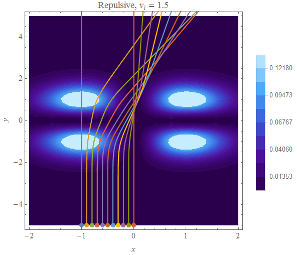
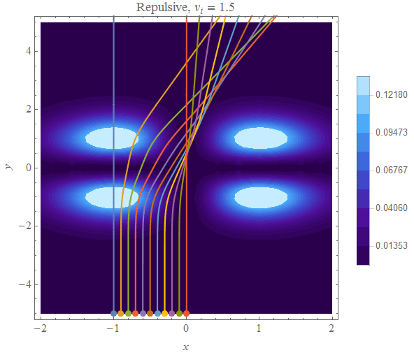
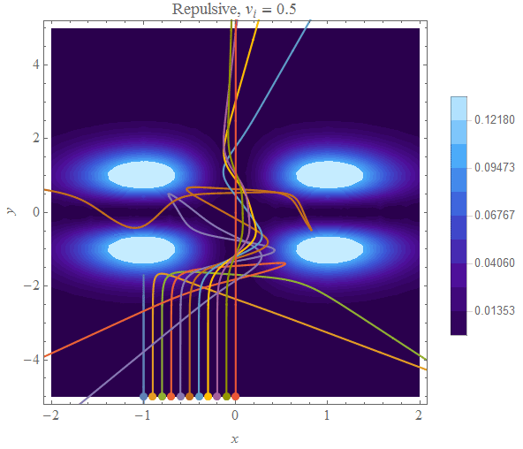
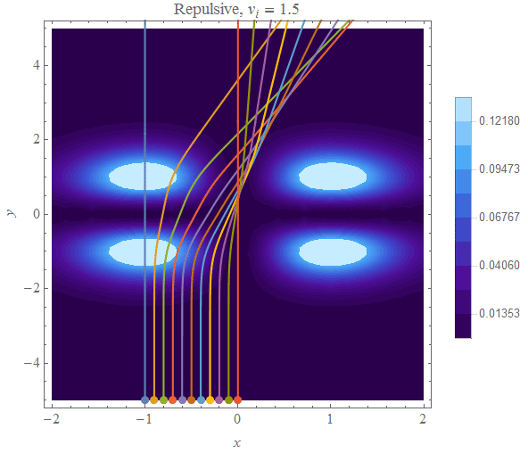
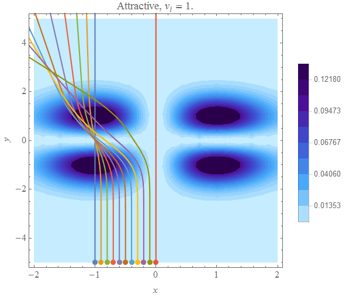
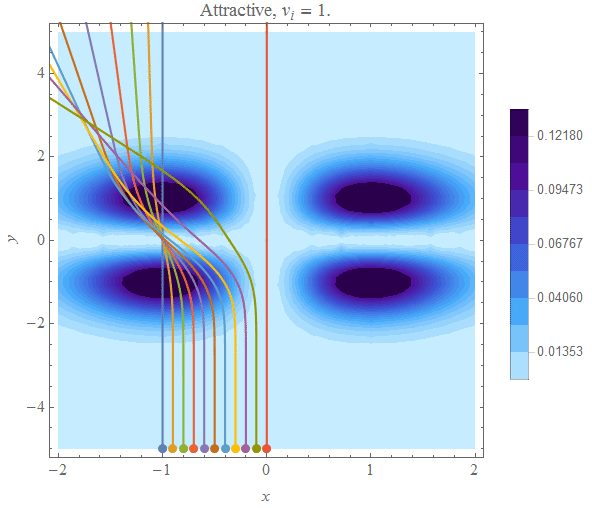
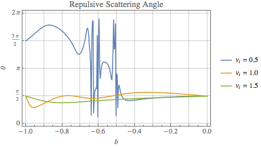

Mikhail Gaerlan
30 September 2015
A potential field is given by the equation
$\displaystyle{V(x,y)=x^2y^2e^{-\left(x^2+y^2\right)}.}$
The path of a particle interacting with this field can expressed by a system of ODE's.
By using numerical methods, the path of of a particle can be plotted in the potential field.
Repulsive
Attractive
The lines represent the path of the particles. The color of the background represents the strength of the potential field.


 




$\displaystyle{\text{For all values of }b\text{ at both }t=0\text{ and }t\gg t _0\text{, }KE\gg PE\text{ and }KE _{t=0}=KE _{t\gg t _0}\Rightarrow E\approx KE\text{ and thus }E _{before}=E _{after}\text{.}}$
$\displaystyle{\text{The scattering angles for }b=-1\text{ and }b=0\text{ are }\frac{\pi}{2}\text{ (except repulsive, }v _i=0.5\text{), which make sense since the particles}}$
$\displaystyle{\text{are entering perpendicular to the field and will continue to move in straight lines. For repulsive }v _i=0.5\text{, the}}$
$\displaystyle{\text{particle does not have enough kinetic energy to overcome the field and thus goes back in the opposite direction.}}$
$\diaplsystyle{\text{For all other values of }b\text{, the scattering angle is seemingly random for low }v _i\text{. For higher }v _i\text{, most of the}}$
$\displaystyle{\text{scattering angles are around }\frac{\pi}{2}\text{ since most of the particles pass through the field mostly unchanged.}}$